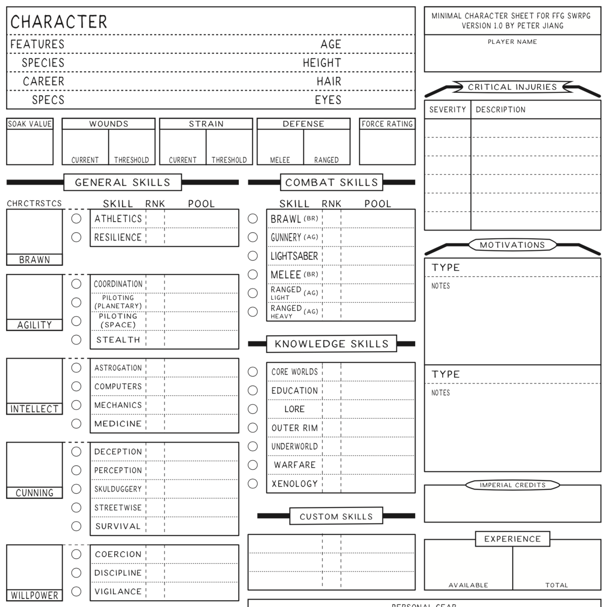

Star Wars RPG Character Sheet

To further cement my nerdom, I started playing my first tabletop RPG - Star Wars: Edge of the Empire. Having never played any RPG before, I can say this one has been fun - though it's quite depressing to see how pathetic my own imagination is, as we collaboratively try to tell the story. Regardless, the DM/GM of the game showed up one day with these papers, but couldn't remember where he got them. They're handy, if you come up with your own character, and need to keep notes. (Too bad the original author no longer seems to have a website.)
Star Wars RPG Character Sheet Files...
- Prior: The Graphic Art of The Incredibles 2
- Next: In Search of Doors